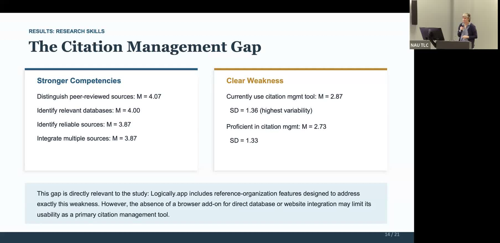

AI-Assisted Literature Reviews for Graduate Nursing Students
Testing whether Logically.app improves research proficiency and critical thinking among advanced practice nursing students.
Delaney La Rosa, Beth McManis, and Jennifer Rossetti, NAU AI Week 2026
About This Project
Transcript not yet available. This project was presented at NAU's AI Week 2026.
Project Highlights
